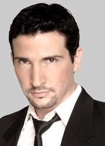

Adam Lopez
 Adam Lopez’s exceptional vocal artistry has paved opportunities to perform backing vocals for some of the biggest names in the music industry such as Mariah Carey, Keith Urban and The Coors. His most recent noted collaboration was headlining with Australian Jazz legend James Morrison in a string of Symphonic Concerts in Perth, Hobart and Brisbane.
His discography includes an eclectic collection of genres spanning from Pop-Opera, Pop, Rhythm &Blues, Jazz, Power Ballads and Fiery Latin!
His phenomenal vocal range smashed two Guinness World Records (one note above the range of a piano!)
This achievement has astounded audiences from all around the world leading him to perform and appear on international television and radio stations in Japan, Spain, Italy, Korea, Hong Kong and the USA.
Adam Lopez has undoubtedly got one of the most fascinating vocal instruments on the planet. He delighted audiences when he sang in Townsville with the Barrier Orchestra in 2012 along with Sean O’Boyle and James Morrison.
HOME